Logic and Proof
10 Semantics of First Order Logic
In Chapter 6, we emphasized a distinction between the syntax and the semantics of propositional logic. Syntactic questions have to do with the formal structure of formulas and the conditions under which different types of formulas can be derived. Semantic questions, on the other hand, concern the truth of a formula relative to some truth assignment.
As you might expect, we can make a similar distinction in the setting
of first order logic. The previous two chapters have focused mainly on
syntax, but some semantic ideas have slipped in. Recall the running
example with domain of interest  , constant symbols 0, 1, 2, 3,
function symbols and
, constant symbols 0, 1, 2, 3,
function symbols and  , and predicate symbols
, etc. We know that the
sentence
, and predicate symbols
, etc. We know that the
sentence  is true in this example, if
is true in this example, if
 is interpreted as the less-than relation on the natural
numbers. But if we consider the domain
is interpreted as the less-than relation on the natural
numbers. But if we consider the domain  instead of , that
same formula becomes false. The sentence is also
false if we consider the domain , but (somewhat perversely)
interpret the predicate
instead of , that
same formula becomes false. The sentence is also
false if we consider the domain , but (somewhat perversely)
interpret the predicate  as the relation "
as the relation " is
greater than
is
greater than  " on the natural numbers.
" on the natural numbers.
This indicates that the truth or falsity or a first order sentence can
depend on how we interpret the quantifiers and basic relations of the
language. But some formulas are true under any interpretation: for
instance,  is true of under
all the interpretations considered in the last paragraph, and, indeed,
under any interpretation we choose. A sentence like this is said to be
valid; this is the analogue of a tautology in propositional logic,
which is true under every possible truth assignment.
is true of under
all the interpretations considered in the last paragraph, and, indeed,
under any interpretation we choose. A sentence like this is said to be
valid; this is the analogue of a tautology in propositional logic,
which is true under every possible truth assignment.
We can broaden the analogy: a "model" in first order logic is the analogue of a truth assignment in propositional logic. In the propositional case, choosing a truth assignment allowed us to assign truth values to all formulas of the language; now, choosing an model will allow us to assign truth values to all sentences of a first order language. The aim of the next section is to make this notion more precise.
10.1 Interpretations
The symbols of the language in our running example – 0, 1,
,  , and so on – have very indicative
names. When we interpret sentences of this language over the domain
, for example, it is clear for which elements of the domain
"should" be true, and for which it "should" be false. But
let us consider a first order language that has only two unary
predicate symbols and . If we take our domain
to be , is the sentence
true or false?
, and so on – have very indicative
names. When we interpret sentences of this language over the domain
, for example, it is clear for which elements of the domain
"should" be true, and for which it "should" be false. But
let us consider a first order language that has only two unary
predicate symbols and . If we take our domain
to be , is the sentence
true or false?
The answer, of course, is that we don't have enough information to say. There's no "obvious" meaning to the predicates or , at least not when we apply them to natural numbers. To make sense of the sentence, we need to know which numbers are fancy and which ones are tall. Perhaps multiples of 10 are fancy, and even numbers are tall; in this case, the formula is true, since every multiple of 10 is even. Perhaps prime numbers are fancy and odd numbers are tall; then the formula is false, since 2 is fancy but not tall.
We call each of these descriptions an interpretation of the
predicate symbols and in the domain
. Formally, an interpretation of a unary predicate  in a
domain
in a
domain  is the set of elements of for which is true. For an
example, the "standard" interpretation of in that
we used above was just the set of prime natural numbers.
is the set of elements of for which is true. For an
example, the "standard" interpretation of in that
we used above was just the set of prime natural numbers.
We can interpret constant, function, and relation symbols in a similar
way. An interpretation of constant symbol  in domain is an
element of . An interpretation of a function symbol with
arity
in domain is an
element of . An interpretation of a function symbol with
arity  is a function that maps elements of to another
element of . An interpretation of a relation symbol
is a function that maps elements of to another
element of . An interpretation of a relation symbol  with arity
is the set of tuples of elements of for which is true.
with arity
is the set of tuples of elements of for which is true.
It is important to emphasize the difference between a syntactic
predicate symbol (or function symbol, or constant symbol) and the
semantic predicate (or function, or object) to which it is
interpreted. The former is a symbol, relates to other symbols, and has
no meaning on its own until we specify an interpretation. Strictly
speaking, it makes no sense to write , where
is a predicate symbol and 3 is a natural number, since
the argument to is supposed to be a syntactic
term. Sometimes we may obscure this distinction, as above when we
specified a language with constant symbols 0, 1, and 2. But there is
still a fundamental distinction between the objects of the domain and
the symbols we use to represent them.
Sometimes, when we interpret a language in a particular domain, it is
useful to implicitly introduce new constant symbols into the language
to denote elements of this domain. Specifically, for each element 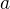
of the domain, we introduce a constant symbol  , which is
interpreted as . Then, the expression does
make sense. Interpreting the predicate symbol in the
natural way, this expression will evaluate to true. We think of as a linguistic "name" that represents the natural number 3, in the
same way that the word "Madonna" is a name that represents the
flesh-and-blood pop singer.
, which is
interpreted as . Then, the expression does
make sense. Interpreting the predicate symbol in the
natural way, this expression will evaluate to true. We think of as a linguistic "name" that represents the natural number 3, in the
same way that the word "Madonna" is a name that represents the
flesh-and-blood pop singer.
10.2 Truth in a Model
Fix a first-order language. Suppose we have chosen a domain to
interpret the language, along with an interpretation in of each of
the symbols of that language. We will call this structure — the
domain , paired with the interpretation — a model for the
language. A model for a first-order language is directly analogous to
a truth assignment for propositional logic, because it provides all
the information we need to determine the truth value of each sentence
in the language.
The procedure for evaluating the truth of a sentence based on a model works the way you think it should, but the formal description is subtle. Recall the difference between terms and assertions that we made earlier in Chapter 4. Terms, like , , or , are meant to represent objects. A term does not have a truth value, since (for example) it makes no sense to ask whether 3 is true or false. Assertions, like , , or , apply predicate or relation symbols to terms to produce statements that could be true or false.
The interpretation of a term in a model is an element of the domain of
that model. The model directly specifies how to interpret constant
symbols. To interpret a term created by applying a
function symbol to another term, we interpret the term  , and then
apply the interpretation of
, and then
apply the interpretation of  to this term. (This process makes
sense, since the interpretation of is a function on the
domain.) This generalizes to functions of higher arity in the obvious
way. We will not yet interpret terms that include free variables like
and , since these terms do not pick out unique elements of the
domain. (The variable could potentially refer to any object.)
to this term. (This process makes
sense, since the interpretation of is a function on the
domain.) This generalizes to functions of higher arity in the obvious
way. We will not yet interpret terms that include free variables like
and , since these terms do not pick out unique elements of the
domain. (The variable could potentially refer to any object.)
For example, suppose we have a language with two constant symbols,
and  , a unary function symbol , and a binary function symbol
, a unary function symbol , and a binary function symbol
 . Let 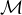 be the model with domain , where and are
interpreted as
. Let 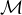 be the model with domain , where and are
interpreted as  and , respectively, 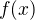 is interpreted as the
function which maps any natural number to , and is the
addition function. Then the term denotes the natural
number .
and , respectively, 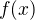 is interpreted as the
function which maps any natural number to , and is the
addition function. Then the term denotes the natural
number .
Similarly, the interpretation of an assertion is a value  or
. For the sake of brevity, we will introduce new notation
here: if
or
. For the sake of brevity, we will introduce new notation
here: if  is an assertion and is a model of the
language of , we write to mean that
evaluates to in , and
to mean that evaluates to . (You can read the symbol
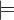 as "satisfies" or "validates.")
is an assertion and is a model of the
language of , we write to mean that
evaluates to in , and
to mean that evaluates to . (You can read the symbol
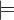 as "satisfies" or "validates.")
To interpret a predicate or relation applied to some terms, we first
interpret those terms, and then see if the interpretation of the
relation symbol is true of those objects. To continue with the
example, suppose our language also has a relation symbol , and
we extend to interpret as the greater-than-or-equal-to
relation. Then we have  , since 3 is not
greater than 5, but , since 14 is greater
than 5.
, since 3 is not
greater than 5, but , since 14 is greater
than 5.
Interpreting expressions using the logical connectives  ,
,
 ,
,  , and
, and  works exactly as it did in the propositional
setting. exactly when
works exactly as it did in the propositional
setting. exactly when  and
and  , and so on.
, and so on.
We still need to explain how to interpret existential and universal
expressions. We saw that intuitively meant that there
was some element of the domain that would make true, when
we "replaced" the variable with that element. To make this a bit
more precise, we say that exactly when
there is an element in the domain of such that, when we
interpret as , then . To continue the
example above, we have , since when we
interpret as 6 we have  .
.
More concisely, we can say that when there
is an in the domain of such that  . The notation indicates that every
occurrence of in has been replaced by the symbol .
. The notation indicates that every
occurrence of in has been replaced by the symbol .
Finally, remember that meant that was true
for all possible values of . We make this precise by saying that
exactly when for every element in the
domain of , interpreting as gives that . Alternatively, we can say that
when for every in the domain of , we have . In our example above, , since when we interpret as 2 we do not have .
These rules allow us to determine the truth value of any sentence in a model. (Remember, a sentence is a formula with no free variables.) There are some subtleties: for instance, we've implicitly assumed that our formula doesn't quantify over the same variable twice, as in . But for the most part, the interpretation process tells us to "read" a formula as talking directly about objects in the domain.
10.3 Examples
Take a simple language with no constant symbols, one relation symbol
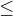, and one binary function symbol  . Our model will have
domain , and the symbols will be interpreted as the standard
less-than-or-equal-to relation and addition function.
. Our model will have
domain , and the symbols will be interpreted as the standard
less-than-or-equal-to relation and addition function.
Think about the following questions before you read the answers below.
Remember, our domain is , not or any other number system.
- Is it true that ? What about ?
- Similarly, what about ? ?
- Do the sentences and
 mean the same thing? Are they true or false?
mean the same thing? Are they true or false? - Can you think of a formula in this language, with one free
variable , such that but ?
These questions indicate a subtle, and often tricky, interplay between the universal and existential quantifiers. Once you've thought about them a bit, read the answers:
- Both of these statements are true. For the former, we can (for
example) interpret as the natural number 0. Then,
 , so the existential is true. For the latter, pick an
arbitrary natural number ; it is still the case that when we
interpret as , we have .
, so the existential is true. For the latter, pick an
arbitrary natural number ; it is still the case that when we
interpret as , we have . - The first statement is true, since we can interpret as 0. The
second statement, though, is false. When we interpret as 1 (or,
in fact, as any natural number besides 0), we see that .
- These sentences do not mean the same thing, although in the
specified model, both are true. The first expresses that some
natural number is less than or equal to every natural number. This
is true: 0 is less than or equal to every natural number. The
second sentence says that for every natural number, there is
another natural number at least as big. Again, this is true: every
natural number is less than or equal to . If we took our
domain to be instead of , the first sentence would be
false, while the second would still be true.
- The situation described here is impossible in our model. If
 , then ,
which implies that . The only time this
situation can happen is when the domain of our model is empty.
, then ,
which implies that . The only time this
situation can happen is when the domain of our model is empty.
Now consider a different language with constant symbol 2, predicate
symbols and  , and binary relation
, and binary relation  ,
interpreted in the natural way over domain . The sentence expresses the fact
that every prime number bigger than 2 is odd. It is an example of
relativization, discussed in Section 7.4. We can now see
semantically how relativization works. This sentence is true in our
model if, for every natural number , interpreting as makes
the sentence true. If we interpret as 0, 1, or 2, or as any
non-prime number, the hypothesis of the implication is false, and thus
is true. Otherwise, if we interpret
as a prime number bigger than 2, both the hypothesis and conclusion of
the implication are true, and is again
true. Thus the universal statement holds. It was an example like this
that partially motivated our semantics for implication back in Chapter
3; any other choice would make relativization impossible.
,
interpreted in the natural way over domain . The sentence expresses the fact
that every prime number bigger than 2 is odd. It is an example of
relativization, discussed in Section 7.4. We can now see
semantically how relativization works. This sentence is true in our
model if, for every natural number , interpreting as makes
the sentence true. If we interpret as 0, 1, or 2, or as any
non-prime number, the hypothesis of the implication is false, and thus
is true. Otherwise, if we interpret
as a prime number bigger than 2, both the hypothesis and conclusion of
the implication are true, and is again
true. Thus the universal statement holds. It was an example like this
that partially motivated our semantics for implication back in Chapter
3; any other choice would make relativization impossible.
For the next example, we will consider models that are given by a
rectangular grid of "dots." Each dot has a color (red, blue, or green)
and a size (small or large). We use the letter to represent a
large red dot and  to represent a small red dot, and similarly for
.
to represent a small red dot, and similarly for
.
The logical language we use to describe our dot world has predicates
, , , and ,
which are interpreted in the obvious ways. The relation is true if the dots referred to by and are touching, not
on a diagonal. The relations ,
, , and
are also self-explanatory. The relation
is true if the dot referred to by is
left of the dot referred to by , regardless of what rows the dots
are in. The interpretations of , ,
and are similar.
Consider the following sentences:

We can evaluate them in this particular model:
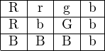
There they have the following truth values:
- false
- true
- false
- false
- true
- true
- false
- true
- false
- false
For each sentence, see if you can find a model that makes the sentence true, and another that makes it false. For an extra challenge, try to make all of the sentences true simultaneously. Notice that you can use any number of rows and any number of columns.
10.4 Validity and Logical Consequence
We have seen that whether a formula is true or false often depends on
the model we choose. Some formulas, though, are true in every possible
model. An example we saw earlier was . Why is this sentence valid? Suppose is an
arbitrary model of the language, and suppose is an arbitrary
element of the domain of . Either or 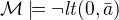. In either case, the
propositional semantics of implication guarantee that . We often write to mean that is a valid.
In the propositional setting, there is an easy method to figure out if
a formula is a tautology or not. Writing the truth table and checking
for any rows ending with is algorithmic, and we know from the
beginning exactly how large the truth table will be. Unfortunately, we
cannot do the same for first-order formulas. Any language has
infinitely many models, so a "first-order" truth table would be
infinitely long. To make matters worse, even checking whether a
formula is true in a single model can be a non-algorithmic task. To
decide whether a universal statement like is true in a
model with an infinite domain, we might have to check whether is
true of infinitely many elements.
This is not to say that we can never figure out if a first-order
sentence is a tautology. For example, we have argued that  was one. It is just a more
difficult question than for propositional logic.
was one. It is just a more
difficult question than for propositional logic.
As was the case with propositional logic, we can extend the notion of
validity to a notion of logical consequence. Fix a first-order
language, 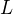. Suppose 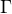 is a set of sentences in , and
is a sentence of . We will say that is a
logical consequence of if every model of is a model
of . This is one way of spelling out that is a
"necessary consequence" of : under any interpretation, if the
hypotheses in come out true, is true as well.
10.5 Soundness and Completeness
In propositional logic, we saw a close connection between the provable
formulas and the tautologies – specifically, a formula is provable if
and only if it is a tautology. More generally, we say that a formula
is a logical consequence of a set of hypotheses, ,
if and only if there is a natural deduction proof of from
. It turns out that the analogous statements hold for first
order logic.
The "soundness" direction — the fact that if is provable
from then is true in any model of — at
any provable formula is a tautology – holds for reasons that are
similar to the reasons it holds in the propositional
case. Specifically, the proof proceeds by showing that each rule of
natural deduction preserves the truth in a model.
The completeness theorem for first order logic was first proved by Kurt Gdel in his 1929 dissertation. Another, simpler proof was later provided by Leon Henkin.
Theorem. If a formula is a logical consequence of a set of
sentences , then is provable from .
Compared to the version for propositional logic, the first order completeness theorem is harder to prove. We will not go into too much detail here, but will indicate some of the main ideas. A set of sentences is said to be consistent if you cannot prove a contradiction from those hypotheses. Most of the work in Henkin's proof is done by the following "model existence" theorem:
Theorem. Every consistent set of sentences has a model.
From this theorem, it is easy to deduce the completeness
theorem. Suppose there is no proof of from . Then
the set is consistent. (If we could
prove  from , then by the
reductio ad absurdum rule we could prove from
.) By the model existence theorem, that means that there is a
model of . But this is a model
of that is not a model of , which means that
is not a logical consequence of .
from , then by the
reductio ad absurdum rule we could prove from
.) By the model existence theorem, that means that there is a
model of . But this is a model
of that is not a model of , which means that
is not a logical consequence of .
The proof of the model existence theorem is intricate. Somehow, from a consistent set of sentences, one has to "build" a model. The strategy is to build the model out of syntactic entities, in other words, to use terms in an expanded language as the elements of the domain.
The moral here is much the same as it was for propositional logic. Because we have developed our syntactic rules with a certain semantics in mind, the two exhibit different sides of the same coin: the provable sentences are exactly the ones that are true in all models, and the sentences that are provable from a set of hypotheses are exactly the ones that are true in all models of those hypotheses.
We therefore have another way to answer the question posed in the previous section. To show that a sentence is a tautology, there is no need to check its proof in every possible model. Rather, it suffices to produce a proof.
10.6 Exercises
In a first-order language with a binary relation,
 ,
consider the following sentences:
,
consider the following sentences:
For each of the following structures, determine whether of each of those sentences is true or false.
- the structure , that is, the interpretation in
the natural numbers where is
- the structure
- the structure
- the structure , that is, the interpretation in
the natural numbers where is the ``divides'' relation
- the structure , that is, the
interpretation where variables range over sets of natural
numbers, where is interpreted as the subset relation.
- Create a 4 x 4 "dots" world that makes all of the following
sentences true:
- Fix a first-order language , and let and
 be any two
sentences in . Remember that means that is
valid. Unpacking the definition, show that if , then and .
be any two
sentences in . Remember that means that is
valid. Unpacking the definition, show that if , then and . - Give a concrete example to show that does
not necessarily imply or . In other
words, pick a language and choose particular sentences
and such that 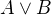 is valid, but neither
nor is valid.